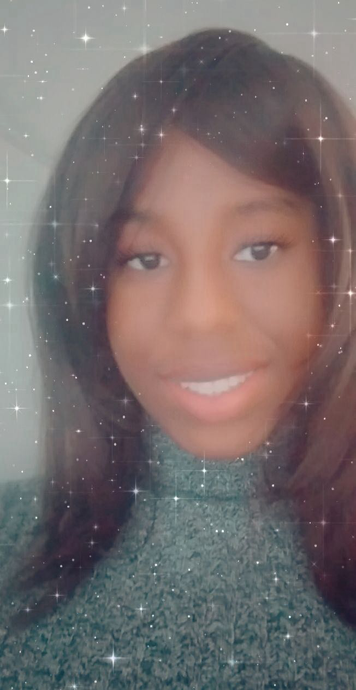

Hello! My name is Franchesca Saint Louis, and graphic designer and visual storytelling. I enjoy transforming ideas into creative, meaningful designs that inspire, communicate, and leave a lasting impression. This portfolio showcases a collection of my work in branding, logo design, digital illustration, motion graphics, video editing, web design, and digital content creation. Each project reflects my creativity, technical skills, and commitment to producing thoughtful, high-quality visual solutions while continuously growing as a designer. As I continue to develop my craft, I am eager to take on new creative challenges, expand my knowledge, and create designs that make a positive impact. Thank you for taking the time to explore my work—I hope you enjoy viewing my creative journey.


